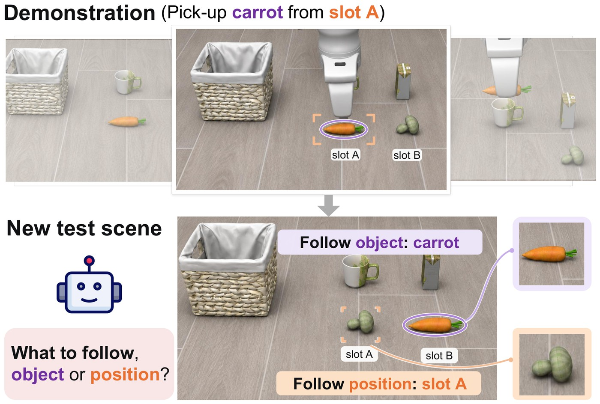
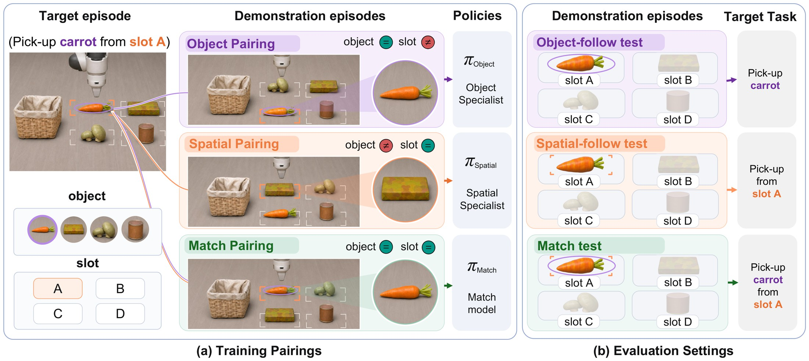
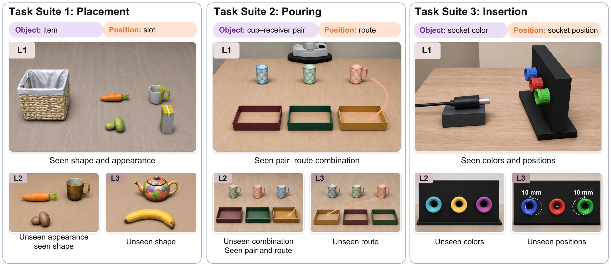

A demonstration shows both the object the robot handles and its position. When the two cues diverge in a new scene, an in-context imitation learning (ICIL) policy must decide which one to follow.

The demonstration picks up the carrot from slot A. In the new scene, following the object selects the carrot; following the demonstrated position selects the mushroom at slot A.
ICIL allows a robot policy to perform a task in a new scene following a demonstration, without updating its weights. In common evaluations, however, the object and position cues are mostly aligned between the demonstration and the new scene, so a success does not show which one the policy followed. We introduce OPTIC, a benchmark that tells the two cues apart, and use it to evaluate six ICIL policies, both end-to-end and optimization-based, on placement, pouring, and insertion tasks, each at three generalization levels.
The target scene and its correct action stay fixed; only the demonstration changes. In the Object-follow test the demonstration shares only the object, in the Spatial-follow test only the position, and in the Match test both, as in most current evaluations. Training pairs are built the same three ways from the same recorded episodes, giving Object specialists, Spatial specialists, and Match models.

Three task suites define the object and the position differently. Each is tested at three generalization levels: L1 keeps the training conditions, L2 introduces unseen appearances, combinations, or colors, and L3 unseen shapes, routes, or socket positions.

Evaluated policies: ICRT, ICLR, BPP, ContextFlow, and Instant-Fold (end-to-end), IMOP (optimization-based), and GPT-Policy (zero-shot VLM agent).
Across the six trained policies, Spatial-follow success keeps 93.7% of the Match success, while Object-follow success keeps only 1.7%: every end-to-end Match model scores zero in the Object-follow test. The zero-shot GPT-Policy, in contrast, follows the object.
| Policy | Suite 1 Placement | Suite 2 Pouring | Suite 3 Insertion | ||||||||
|---|---|---|---|---|---|---|---|---|---|---|---|
| Match | Spatial | Object | Match | Spatial | Object | Match | Spatial | Object | |||
| ICRT | 77.2 | 57.8 | 0.0 | 66.7 | 66.7 | 0.0 | 77.8 | 77.8 | 0.0 | ||
| ICLR | 76.7 | 57.8 | 0.0 | 66.7 | 66.7 | 0.0 | 80.0 | 82.2 | 0.0 | ||
| BPP | 66.1 | 63.9 | 0.0 | 68.9 | 71.7 | 0.0 | 95.0 | 95.0 | 0.0 | ||
| ContextFlow | 62.2 | 60.6 | 0.0 | 68.9 | 68.3 | 0.0 | 68.3 | 72.2 | 0.0 | ||
| Instant-Fold | 63.3 | 54.4 | 0.0 | 66.7 | 65.6 | 0.0 | 55.6 | 57.8 | 0.0 | ||
| IMOP | 76.7 | 32.2 | 23.3 | 52.2 | 54.4 | 0.0 | 71.1 | 68.3 | 0.0 | ||
| GPT-Policy† | 99.4 | 0.0 | 99.4 | 100.0 | 0.0 | 83.3 | 98.3 | 0.0 | 97.2 | ||
Re-pairing the same recorded episodes, without new data or architectural changes, shifts which cue a policy follows. Following the object is much harder to learn: excluding IMOP, Object specialists average 19.6% in the Object-follow test, against 68.4% for Spatial specialists in the Spatial-follow test.
| Policy | Spatial specialists | Object specialists | |||||
|---|---|---|---|---|---|---|---|
| Match | Spatial | Object | Match | Spatial | Object | ||
| ICRT | 67.0 | 66.9 | 0.0 | 2.7 | 2.8 | 21.4 | |
| ICLR | 63.8 | 63.5 | 0.0 | 5.4 | 5.4 | 18.8 | |
| BPP | 78.5 | 77.3 | 0.0 | 6.1 | 5.6 | 28.0 | |
| ContextFlow | 70.8 | 69.9 | 0.0 | 4.4 | 4.0 | 19.0 | |
| Instant-Fold | 64.2 | 64.1 | 0.0 | 5.9 | 5.1 | 10.7 | |
| IMOP | 66.5 | 62.4 | 0.1 | 56.1 | 0.4 | 46.3 | |
Re-pairing yields one specialist per cue. Can a single model hold both abilities and follow whichever cue it is told to? We compare three signals that tell a single model which cue to follow.
Mode tokens can enable both abilities in one model but are not always effective, while language, which names the target directly, complements the demonstration and reduces the ambiguity in what to follow.
ICRT at L2, the same target scene in each suite; only the demonstration and the model change. Real time.
Rows: mode token (ICRT, Suite 3), language (ContextFlow, Suite 3) and two demonstrations (ICRT, Suite 1). Each row keeps its model and its L2 target scene across the two tabs; the demonstrations follow the test. Real time.
@article{optic,
title = {What to Follow in In-Context Imitation Learning},
author = {Dai, Xianjie and Mi, Li and Mouri Zadeh Khaki, Ahmad and Choi, Kyunghwan and Elhoseiny, Mohamed and Huang, Heye and Ding, Jian},
journal = {arXiv preprint},
year = {to be added}
}